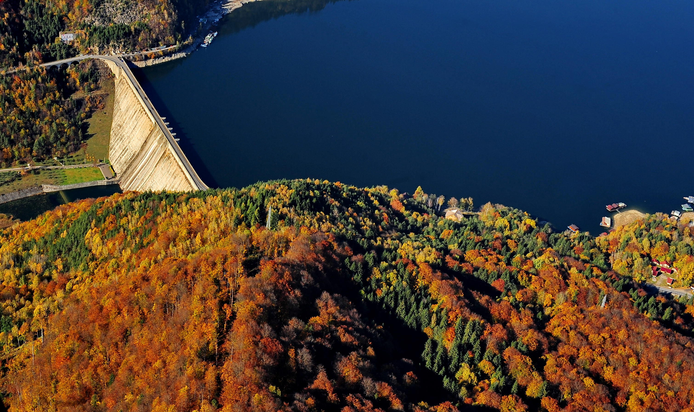
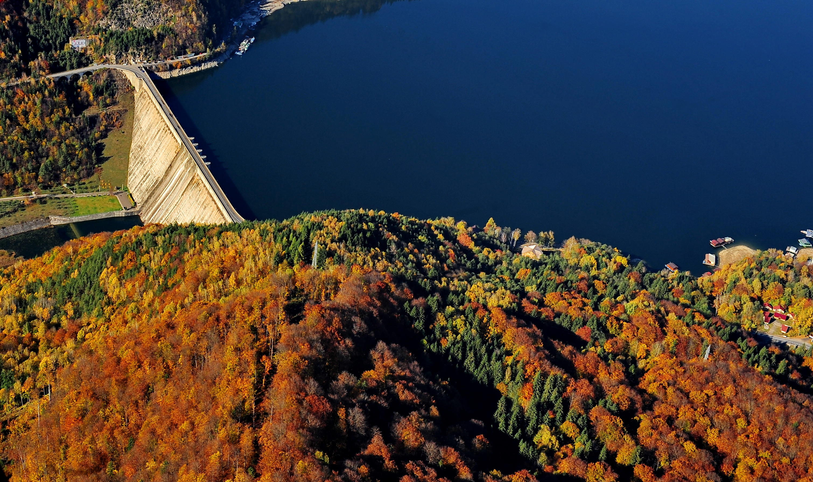

Istoria regiunii Moldova:
Moldova este regiunea din nord-estul Romaniei, cuprinzand teritoriul ramas din Principatul Moldovei dupa pierderea in 1776 a regiunii de nord-vest numita Bucovina si in 1812 a jumatatii de rasarit din Principat numita Basarabia (Republica Moldova).
Regiunea Moldova este alcatuita din urmatoarele județe: Iași, Vaslui, Galați, Botoșani, Neamț, Bacău, Vrancea si Suceava.
Regiunea Moldova, din România este total diferită de Republica Moldova, aflată în estul acesteia. Primele popoare s-au stabilit aici încă din antichitate când dacii și apoi romanii au fost la dominația acestor ținuturi.
Relieful regiunii Moldova

Fiind una dintre cele mai întinse regiuni ale României, Moldova are un relief cu totul special. De la munte la câmpie, aici turistul poate întâlni orice formă de relief din cele principale. Partea de vest a Moldovei este muntoasă și în același timp deosebită pentru că oferă cele mai spectaculoase peisaje din regiune. Munții Tarcăului, Munţii Ciucului, Munţii Nemira, Munţii Hăşmaş, Munţii Ceahlău, Munţii Stânişoarei și Munţii Vrancei care compun această parte sunt bogați în trasee de drumeție și în peisaje care-ți taie răsuflarea. Partea centrală și de est sunt acoperite de Podișul și Câmpia Moldovei. Acestea din urmă se împart la rândul lor în subdiviziuni, din loc în loc apărând și zone de luncă (Lunca Dunării, Lunca Siretului Inferior şi Lunca Prutului de Jos).
Clima, râurile şi lacurile din regiunea Moldova:
Clima Moldoveană este destul de răcoroasă. Fiind un climat temperat continental, influențele venite dinspre Siberia sunt foarte vizibile aici. Verile sunt calde, dar uneori mai răcoroase, iar iernile mai lungi și aspre cu precipitații bogate sub formă de ninsoare. În partea de sud, totuși temperaturile maxime pe timpul verii pot depăși 30-35° C. Regiunea Moldova este foarte bogată în ape curgătoare. Cele mai lungi și mai importante râuri sunt Siret, Bistriţa, Trotuş, Prut, Dunărea, Bârlad, Bahlui, Jijia și Moldova, iar cele mai mari și mai importante lacuri sunt Drăcşani, Negreni, Hăneşti, Mileanca, Havârna, Brateş, Lieşti, Lupele, Izvorul Muntelui (unul dintre cele mai mari din România) și multe altele. Moldova este cunoscută pentru caracterul ei piscicol și vânătoresc, multe dintre lacurile și pădurile sale fiind recunoscute în aceste sensuri.